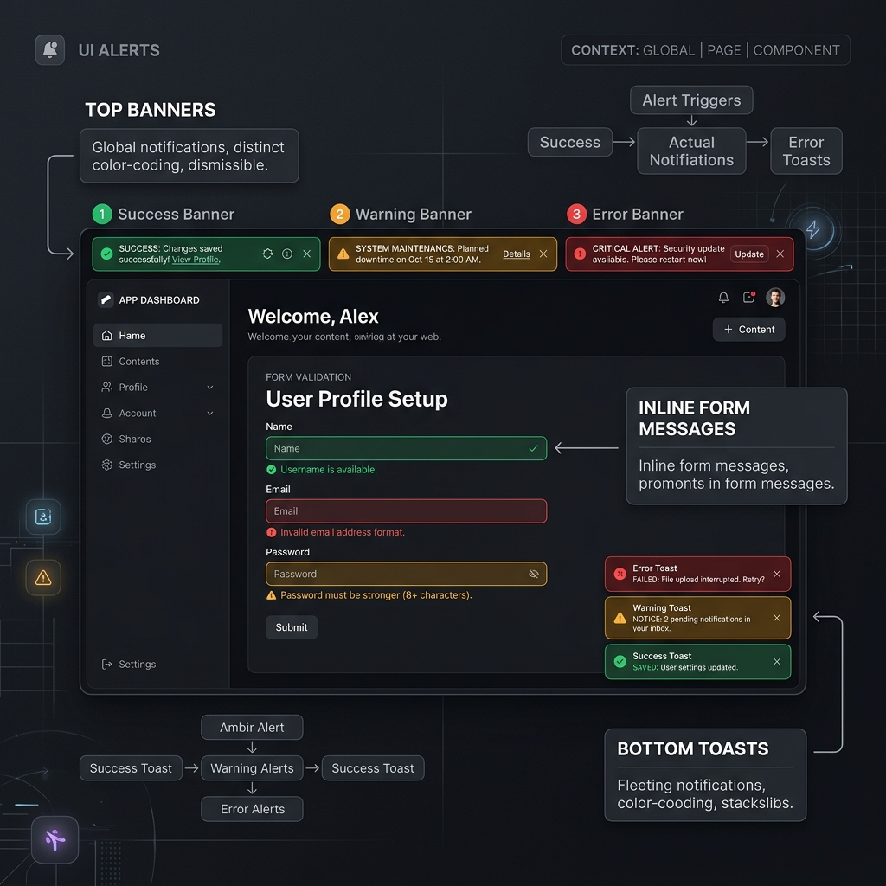
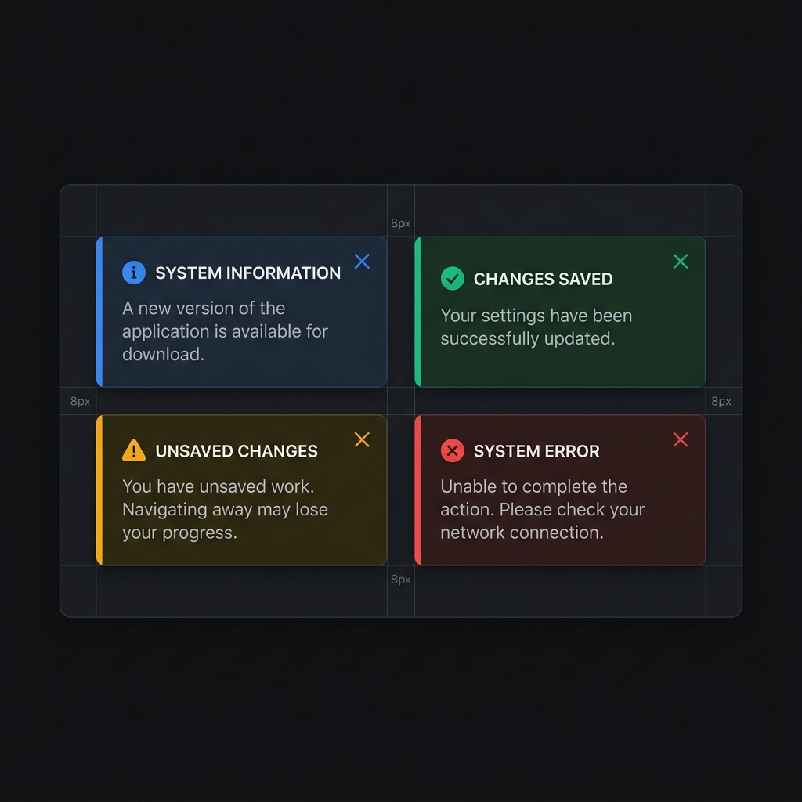

Establishing Clarity Between Banners, Toasts, and Contextual Feedback — redesigning a broken messaging architecture.
The feedback system was incoherent. "Inline Alerts" was one of the missing components in the library. Users were receiving global banners for local input errors, or toasts that vanished before they could be read. I led the redesign of the messaging architecture, moving from a binary choice (Banner or Toast) to a tiered system that respected user context and actionability.
During the audit, I mapped message types across six product areas and identified a "missing middle" layer. Users struggled to differentiate between global system alerts and local form errors. I analyzed patterns in Carbon and Polaris to define a clear hierarchy: Banners (Global), Inline Alerts (Contextual), and Toasts (Transient).

// Hierarchy — Banner (global) → Inline Alert (contextual) → Toast (transient)

// Four variants — Critical / Warning / Info / Success, full and 48px compact